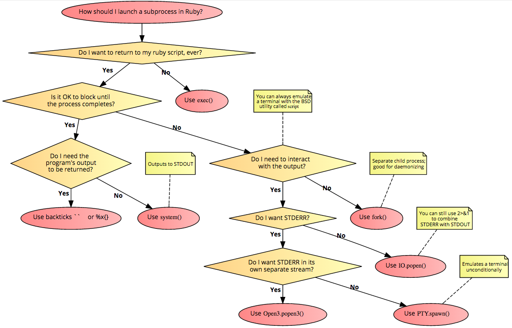

How to call shell commands from Ruby
How do I call shell commands from inside of a Ruby program? How do I then get output from these commands back into Ruby?
Answer
This explanation is based on a commented Ruby script from a friend of mine. If you want to improve the script, feel free to update it at the link.
First, note that when Ruby calls out to a shell, it typically calls /bin/sh,
not Bash. Some Bash syntax is not supported by /bin/sh on all systems.
Here are ways to execute a shell script:
cmd = "echo 'hi'" # Sample string that can be used
- `Kernel#
, commonly called backticks –cmd``
This is like many other languages, including Bash, PHP, and Perl.
Returns the result (i.e. standard output) of the shell command.
Docs: http://ruby-doc.org/core/Kernel.html#method-i-60
value = `echo 'hi'`
value = `#{cmd}`
- Built-in syntax,
%x( cmd )
Following the x character is a delimiter, which can be any character. If the
delimiter is one of the characters (, [, {, or <, the literal consists
of the characters up to the matching closing delimiter, taking account of
nested delimiter pairs. For all other delimiters, the literal comprises the
characters up to the next occurrence of the delimiter character. String
interpolation #{ ... } is allowed.
Returns the result (i.e. standard output) of the shell command, just like the backticks.
Docs: https://docs.ruby-lang.org/en/master/syntax/literals_rdoc.html#label- Percent+Strings
value = %x( echo 'hi' )
value = %x[ #{cmd} ]
Kernel#system
Executes the given command in a subshell.
Returns true if the command was found and run successfully, false
otherwise.
Docs: http://ruby-doc.org/core/Kernel.html#method-i-system
wasGood = system( "echo 'hi'" ) wasGood = system( cmd )
Kernel#exec
Replaces the current process by running the given external command.
Returns none, the current process is replaced and never continues.
Docs: http://ruby-doc.org/core/Kernel.html#method-i-exec
exec( "echo 'hi'" ) exec( cmd ) # Note: this will never be reached because of the line above
Here's some extra advice: $?, which is the same as $CHILD_STATUS, accesses
the status of the last system executed command if you use the backticks,
system() or %x{}. You can then access the exitstatus and pid
properties:
$?.exitstatus
For more reading see:
- http://www.elctech.com/blog/i-m-in-ur-commandline-executin-ma-commands
- http://blog.jayfields.com/2006/06/ruby-kernel-system-exec-and-x.html
- http://tech.natemurray.com/2007/03/ruby-shell-commands.html
Suggest
Here's a flowchart based on "When to use each method of launching a subprocess in Ruby". See also, "Trick an application into thinking its stdout is a terminal, not a pipe".
